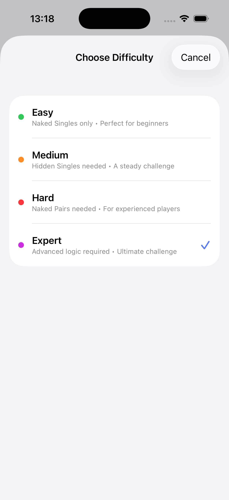
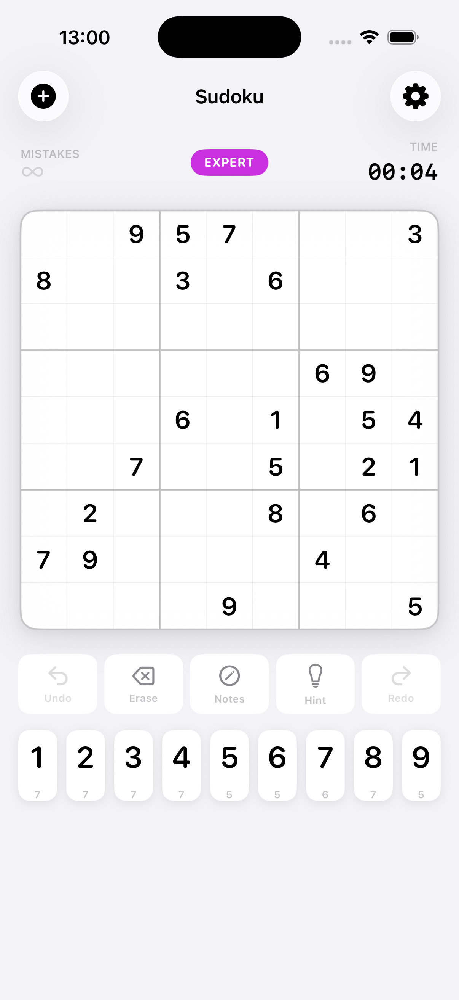
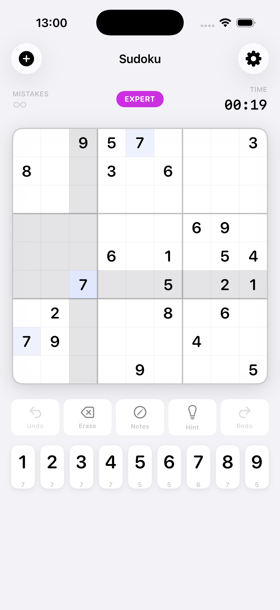
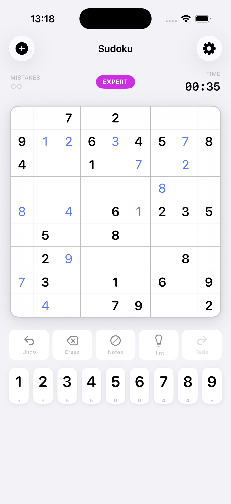
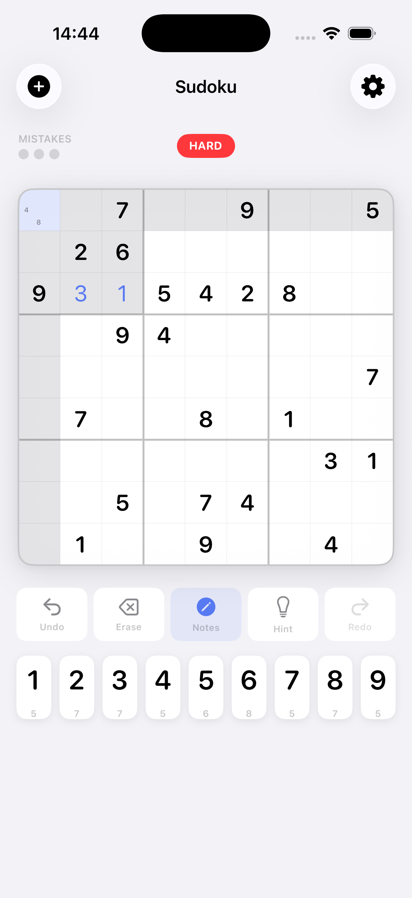
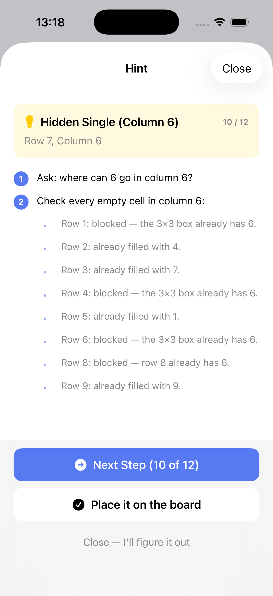
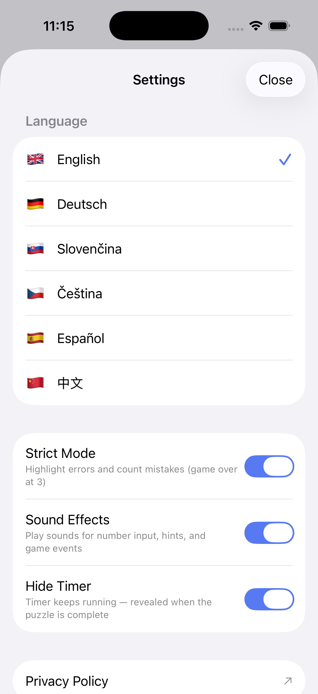
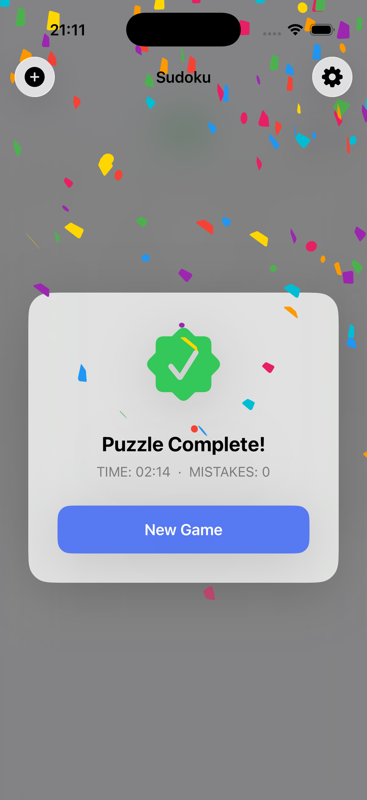

Sudoku Rules
Sudoku is a logic puzzle played on a 9×9 grid divided into nine 3×3 boxes. The grid starts partially filled. Your goal is to fill every empty cell with a digit from 1 to 9 following three simple rules:
Each row
must contain the digits 1–9 with no repetition.
Each column
must contain the digits 1–9 with no repetition.
Each 3×3 box
must contain the digits 1–9 with no repetition.
Every valid Sudoku puzzle has exactly one solution. No guessing is ever required — the answer can always be found through logic alone.
How to Play
Starting a game
Tap the + button in the top-left corner to start a new game. Choose a difficulty level and a fresh puzzle is generated instantly.


Selecting and filling a cell
Tap any empty cell to select it — it turns blue. The entire row, column, and 3×3 box it belongs to are highlighted so you can see what numbers are already placed. Then tap a number on the pad below to fill it in.
Numbers you enter appear in blue. Pre-filled numbers are in black. Tap the same number again to erase your entry.


Number pad
The digit buttons at the bottom show a small counter below each number indicating how many more times that digit needs to be placed. When the counter reaches 0 the button is greyed out — that digit is complete.
Pencil / Notes mode
Tap the Notes button to switch to pencil mode. In this mode, tapping a digit adds it as a small candidate note inside the cell instead of filling it. Use notes to track which numbers are still possible for a cell. Tap a noted digit again to remove it.

Features
Difficulty levels
Four levels, each requiring progressively more advanced solving techniques:
| Level | Technique required | Best for |
|---|---|---|
| Easy | Naked Singles only | Beginners — every cell has one obvious answer |
| Medium | Hidden Singles | A steady, satisfying challenge |
| Hard | Naked Pairs | Experienced players |
| Expert | Advanced logic | The ultimate challenge |
Toolbar
Hints
Tap Hint and the app analyses the current board state and walks you through solving one cell — step by step — using the same logic a human solver would use (Naked Single, Hidden Single, etc.). You control how many steps to reveal. When you're ready, tap Place it on the board to apply the answer.

Colour coding
Settings
Tap the ⚙ button in the top-right corner to open Settings.
Strict Mode
When enabled, incorrect entries are highlighted in red and counted as mistakes. Three mistakes ends the game. When disabled, wrong numbers are accepted silently — only the final solution check matters.
Sound Effects
Toggle audio feedback for number input, hints, undo/redo, and game-completion events.
Hide Timer
When enabled, the elapsed-time counter is hidden during gameplay. Useful if you prefer to play without time pressure.
Language
The app is available in English, Deutsch, Slovenčina, Čeština, Español, and 中文. All UI text, hint explanations, and difficulty descriptions are fully translated.

Completing a puzzle
Fill every cell correctly and the board locks, confetti falls, and a summary card shows your time and total mistakes. Tap New Game to jump straight into the difficulty picker.

Tips & Strategies
- Start with the easiest cells. Look for rows, columns, or boxes that already have 7–8 numbers filled — the remaining cell has only one possible value.
- Scan one number at a time. Pick a digit (e.g. 5) and mark every row and column where it already appears. Any box missing a 5 must place it in the one remaining valid cell.
- Use pencil notes early. On Medium and above, write candidate numbers in empty cells as you eliminate possibilities. It makes patterns much easier to spot.
- Look for Hidden Singles. A digit that can only fit one cell in a row, column, or box — even if that cell has many other candidates — is called a Hidden Single. It's the most common technique on Medium difficulty.
- Naked Pairs speed things up. If two cells in the same row/column/box both have exactly the same two candidates, those two numbers can be eliminated from every other cell in that row/column/box.
- Use Undo freely. Made a mistake? Undo as many times as you need — there's no penalty.
- Use Hints to learn, not just to finish. The step-by-step hint sheet teaches you the exact technique needed for each cell. Reading through all the steps is a great way to improve your solving skills.